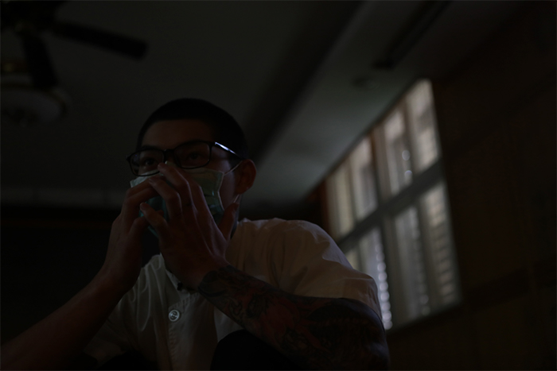
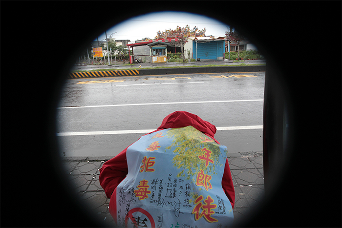
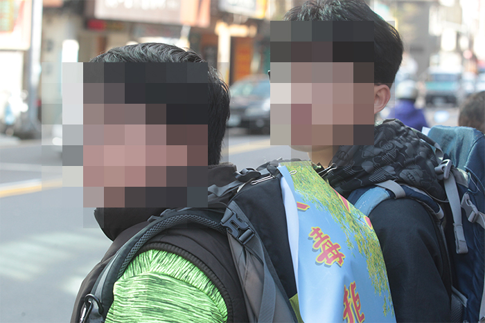

搖擺少年：15歲小安的吸毒人生
少年在路上搖搖擺擺地行走，走過山，越過海，46天、1046公里，他在心裡低念：「結束的是環島，開始的是人生。」但他的人生卻並未因此一路順遂。
2018年，年紀僅15歲的小安（化名），身上已背負多條罪名，詐欺、毒品、竊盜，在人生懸崖邊搖擺，想透過環島戒毒重回正常生活，卻抵不過誘惑，最後仍重回毒品深淵。
2021年，18歲的小安，在新竹誠正中學接受感化教育，我們穿過層層檢查、柵門，眼前的小安剃了顆俐落的光頭，原本不時挑釁防備的眼神，變得清明而誠摯；乖張易怒的脾氣變得禮貌乖順，他像刺蝟攤開柔軟的肚皮，向我們說出心裡話：「我想像個正常人過正常生活，有夢想、有目標。」
在這一年半的感化人生，小安學習烘焙、上課、寫信，盼望走出矯正機構的那天到來，今年夏天，他將結束感化教育，重回社會找回自己的人生。
小安只是眾多搖擺少年的縮影。根據內政部警政署統計，光去年就有 5637名青少年涉毒，而這還是被低估的數字，實際黑數難以計算。
過去3年，《蘋果新聞網》記錄小安不斷搖擺的人生，從環島、戒毒、失控，到他受感化教育時的告白，試圖還原躲在暗處的少年面貌，他們如何在自己人生泥濘中掙扎、求救訊號又如何被忽視，毒品對他們如何既是「救贖」也是深淵？故事必須從頭說起。

「媽媽從來沒愛過我」 少年靠毒品逃避生活
「我從來沒覺得她愛過我。」小安談起自己的母親時如此說著。
小安的親生母親姓姜，從中國嫁來台灣，在和前夫離異、工作忙碌難以分身下，便將小安托給養父母照顧，兩人僅在假日相見。而在小安7歲那年，某個假日母親消失了，「聽說因為吸毒被抓去關，當下很難過，但從那之後就覺得無所謂了。」他開始學著不抱期待。
小安的母親因為吸毒被遣返中國，而年紀尚幼的小安，也跟著一起離開台灣，從那時候，人生開始有裂縫。
「我被丟在外婆家，她也不會打電話問我過得怎麼樣，錢寄了就繼續做她的事情。」漫長的四年半裡，他只見過母親三次，在最需要關愛的年紀，他獨自成長，回到空無一人的家，肚子餓了沒錢吃飯，走偏了沒人發現。
人生每個轉折都有跡可循，即便幽微難見。小安開始逃學、逃家，獨自在中國廣州流浪一個月，每天窩在網咖過活，少年的靈魂就在暗處滋養長大。
13歲的時候，母親再也管不住他，將他送回台灣養父母家，小安卻越來越失控。養父林先生如此形容，小安抽菸、喝酒、紋身樣樣來，甚至在房間發現吸食毒品用的針孔，讓他大感震驚：「他小時候個性很單純，乖地不得了，不知道為什麼變成這樣。」
在養父看不見的時刻，小安遊走網咖、學校圍牆外，因對毒品的好奇，在朋友慫恿下，喝下第一包毒咖啡。小安回憶首次用毒經驗，「很飄啊，感覺很好，後面一直用、一直用，根本就離不開了。」
從初階的咖啡包、K他命、彩虹菸，到進階的安非他命，小安的藥癮越來越嚴重，整天活在迷幻世界裡。小安說，有次用了一整包夾鏈袋的安非他命，「很恐怖，不敢抬頭看人，你會疑心病很重。」
「我看到神明在抽菸、一個人在家洗澡時，聽到有人說：『幹你娘，吃毒的！』，我轉頭回他：『幹你娘，吵三小啦！』」
毒癮伴隨而來的是金錢需求，他開始去夜市打工、私賣毒品、當車手，甚至偷養父母的提款卡，盜領了8萬塊，「偷錢那天我斷片了，我有印象的時候，已經在朋友家了。」
用毒會後悔嗎？小安淡淡說，「會阿，用毒花了好幾萬，現在吃壞掉，變不正常了。」他躺在地板上，面無表情地看著天花板，「我的臉，不是看起來ㄎㄧㄤ、ㄎㄧㄤ的嗎？」
詐欺、毒品、竊盜，多項罪名讓小安不得不接受感化教育，一直看到小安被戴上手銬帶走，養父再也忍不住哭出來，「看到他好像很委屈，我心裡也很難過。」他不知道小安為什麼走上吸毒這條路，只能推測，「應該是在中國那段期間，沒有人好好照顧他。」
從小被遺棄的少年，在台灣與中國之間周折，沒有人發現他心裡的洞，那個白淨、乖順的小孩，便一步步墜入毒品的深淵裡。

1046公里環島長征 「我想要改變」
他並非一路往下墜，他曾掙扎過，也曾好轉過。
小安5年前在國中中途班遇見兼課的退休上校督導吳豫州，正值用毒的高峰期，終於有個願意聽他說話的人，少年晦暗的生命透進一點光。
吳豫州回憶，小安當時高度依賴毒品，生活過得很辛苦，每天為了找錢而賣毒品，又要躲警察、躲老師，於是他決定帶著小安徒步環島戒毒，遠離毒品誘惑的生活圈。
2018年1月，一群人從桃園出發，小安的身上背著「反毒拒毒壯行，少年郎環島」的旗幟，不僅詔告世界，也在反覆提醒自己，往前邁進的每一個步伐，都是為了成為更好的自己。
第1天，小安說，自己沒信心可以環島一圈，「之前根本沒想過走路環島，神經病！」但他繼續往前邁進，沿路菸癮犯了，就撿地上菸頭吸，過過乾癮。
第11天，蘇澳新站上，連日身體的折磨及止不住的菸癮，讓小安生氣地扔下背包，打算放棄環島回家，最後在吳豫州說服下，才重回環島路程，沿路他邊走邊睡，搖搖擺擺卻仍持續向前。
第32天，抵達台南，小安手腳上布滿疥瘡，陪同環島的志工說，「看到孩子抓到腳都流血，我真的很想抱住他們，為什麼孩子要自己忍耐這麼久。」他無法想像這些孩子在原生家庭的生活，但他沿路看到的是這群少年溫暖的笑容，「他們不只單純接受對方的愛，也給對方愛。」
宜蘭濕冷的雨、花蓮陽光與小黑蚊、台東比毒品還上癮的釋迦、高雄的海，沿路的每一聲「加油」，每個片段都織入少年的記憶。
那天陽光照在少年的臉龐，小安左右晃動，跳躍、轉身、投球，爽朗的笑聲充斥球場，小安說，他以後想要學水電、做大事業，好好賺錢存錢，那一瞬間，他只是一般的少年，有著一樣平凡簡單的夢想。
環島結束的前一天晚上，小安跑到吳豫州的床邊，捱著他的肩小聲說，「我覺得（戒毒）很難，但我還是要改變。」並在自己的日記寫下：「結束的是環島，開始的是人生。」
46天，1046公里，吳豫州談起小安環島後的改變，「他願意開始思考，為什麼把自己變成這樣，當他思考就有改變的可能。」他逐漸懂得守時、尊重，超越身體的極限，這微小的改變也許看起來沒什麼，對孩子來說卻已經很棒了，「孩子把路走完了，人生的路才正要開始。」

失控的吸毒人生 「我就吸毒吸到死好了」
人本來就存在好幾個向度裡，強悍與脆弱、混沌與清醒、殘惡與善良，隨著每次撞擊，在這之間拉扯，只是不巧，少年每次的搖擺，都讓自己更往下墜。
環島結束後，小安試著回歸正常生活，打工、寫字、畫畫，但過去的影子總是追著他，在朋友誘惑下，他重回毒品的深淵，吸笑氣、拉k、偷錢，「我就吸毒吸到死好了。」小安如此說著。
「他一個人在這邊太孤獨了，才會叛逆。」時隔兩年才回台見到小安的親生母親，後悔地說著，自己是工作狂，疏於照顧小安，「我想給他最好的生活，到最後錢沒賺到，小孩也叛逆不乖。」現在只希望能夠陪著小安，「再苦再累我也想跟他一起，讓他變乖一點。」
小安沒有按照她的期望變乖，反而從少年之家逃跑，在每一個選擇關卡裡，他越走越偏，最後進入誠正中學，進行長達一年半的感化教育。
沒有自由的日子，小安從自暴自棄到開始反省，他勤勞地寫信給養父，分享他的生活、關心家人，也開始有了夢想。「我很慶幸自己能進來，學到很多東西，越來越了解自己。」
小安說著以前的不懂事，做事情不想後果、又沒有生活重心，才會受到誘惑就吸毒，未來還很遠，他無法保證往後的日子，但他堅定地說：「繼續碰毒品機率不大，浪費錢、浪費時間、浪費自由。」
小安不再對世界充滿敵意，對自己人生開始有嚮往，今年夏天，他將結束感化教育，重回社會找回自己的人生，他想回學校念書，想開間麵包店，決心斷開過去充滿毒品誘惑的生活圈。我們臨走前，他語帶期待地問：「你們會來接我嗎？」他已經迫不及待開始他的新人生。

社會安全網缺乏統籌單位 吸毒少年成「人球」被漏接
小安不是唯一的人，還有好幾個小安，遊走在社會角落，這些躲在暗處沒有臉孔的少年們，正發出微弱的求救訊號，卻未被發現。
根據內政部警政署統計，近5年青少年涉毒品案人數，雖然從2016年9583人，降為2020年5637人。不過，更生少年關懷協會主任陳彥君認為，還存在許多黑數未被統計，實際青少年涉毒人數恐破萬。
「會接觸毒品的孩子，他們其實心裡都有個洞。」陳彥君輔導偏差行為少年長達10年，這些少年的共通點就是缺乏愛、缺乏人生目標，他們可能不受家人關心、照顧，或在學校遇到學業、人際挫敗，因此常感到人生迷惘。
陳彥君說，一開始他們會有一些偏差行為，如說謊、偷竊，「是在釋放警訊說他需要被關注、在求助。」但往往因為家人沒意識到，最後少年只能靠自己，「毒品就是一個可以讓他抓住的東西，躲到毒品當中，他就不用面對這麼多壓力。」
「社會安全網有理想，但是跟實務偏離太多。」桃園少年之家執行長張進益直批，目前政府缺乏專責單位統籌，資源無法集中，反而分散力量，他舉例，有些難以輔導的案例，一開始由社政單位輔導，不行就丟給衛生，再不行丟給警政，最後沒辦法就交由司法單位關起來，但少年的問題卻依然沒被解決。
這些吸毒少年的背後，是家庭關係的失衡，而社會安全網又搖搖欲墜，本該是恣意揮灑青春的少年， 變成「人球」不斷被漏接，無數個小安的故事，正在社會角落不斷發生。